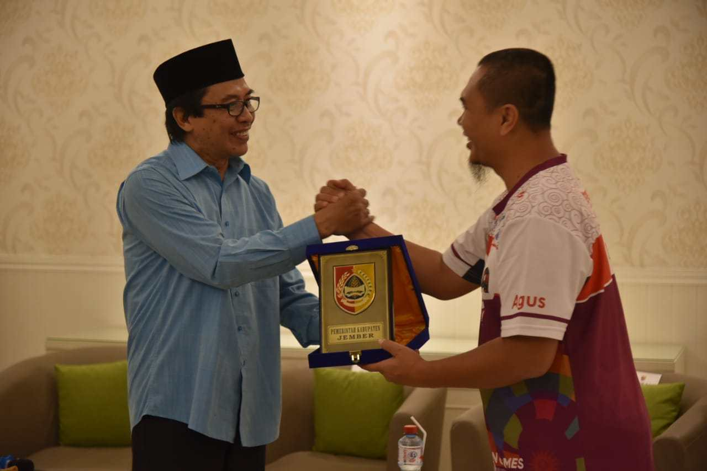

Jelajah Sepeda Nusantara
Sambut Jelajah Sepeda Nusantara, Wabup Muqit Promosikan Wisata Jember
Kedatangan Jelajah Sepeda Nusantara 2018 di Jember, Rabu 7 November 2018, menjadi momen menarik bagi Wakil Bupati Jember Drs. KH. Abdul Muqit Arief untuk mempromosikan wisata Bumi Pandhalungan.
Di Doho Home Stay Sumbersari, yang menjadi tempat penyambutan, Wabup menjelaskan Jember sebagai Kabupaten 4 C, yakni cigarette (tembakau), coffee (kopi), cacao (kakao), dan culture (budaya).
“Juga, Jember dikenal sebagai Kota Karnaval dan Pandhalungan,” jelasnya.
Menurut Wabup, peserta Sepeda Nusantara 2018 yang berasal dari berbagai daerah, suku, dan agama menjadi wujud Sumpah Pemuda. Dengan mengelilingi Indonesia, olahraga ini juga menumbuhkan rasa kebhinekaan, kesatuan nusantara.
Kedatangan Jelajah Sepeda Nusantara, bagi Wabup, menjadi kebanggaan tersendiri. Kegiatan ini juga diharapkan mampu menginspirasi masyarakat Jember untuk melakukan olahraga.
Terkait Jelajah Sepeda Nusantara, Ketua Tim Jelajah Sepeda Nusantara yang juga Staf Asisten Deputi Pengelolaan Olahraga Rekreasi Deputi Bidang Pemberdayaan Olahraga Kemenpora RI, Agus Santoso menyampaikan awal kegiatan ini dirancang.
Menurutnya, awal mulanya Kemenpora mengajak untuk ayo berolahraga dengan media sepeda dan yang bisa menjelajah dari satu kota ke kota lain.
“Sepeda Nusantara ini akan dilaksanakan di 34 provinsi 70 titik kota atau kabupaten di seluruh Indonesia,” jelasnya.
Terdapat 28 orang yang terdiri dari 15 atlet dan 13 official didampingi 1 orang dari Kemenpora. 15 atlet dari berbagai pulau mewakili Indonesia dan dari berbagai profesi serta berbagai umur.
VSaat ini melaksanakan etape 4, yaitu Jawa dimulai dari Banyuwangi. Sampai saat ini telah menempuh jarak sejauh 6.000 km.
Jelajah Sepeda Nusantara ini bertujuan mengajak masyarakat di sekitar jalan yang dilintasi agar lebih giat lagi berolahraga. Dengan berjelajah ini bisa menikmati pemandangan alam dan kuliner.
Salah satu peserta tertua yakni Kamaruzaman. Peserta tertua berumur 56 tahun berasal Pontianak Kalimantan Barat ini mulai bersepeda sedari SMA. Ia berharap kegiatan seperti ini dapat memotivasi semangat pemuda dalam berolahraga.